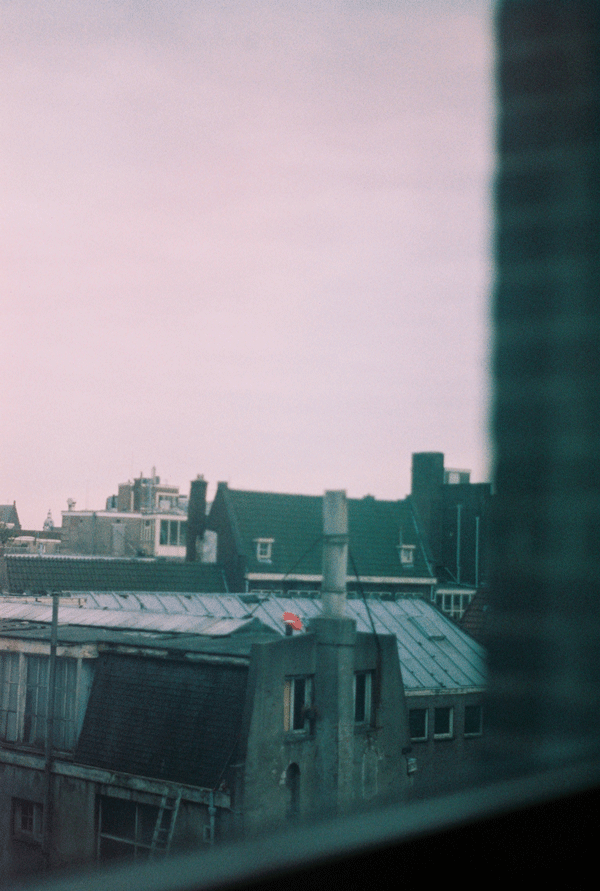

In 2008 I came to Amsterdam to study Psychology. I managed to obtain a BA in Social Psychology and continued afterwards with my Master. I specialized in Health and Behaviour and I wrote my Master about the impact of feeling humiliated on health. As a follow up I became a data-analyst as part of an research group where we investigated how resilient dutch citizens are for radical messages. This happend in the period where a lot of young men and women went to Syria to fight for the Islamic State. Somehow my career prospects and the work environment let me to the conclusion that I should apply for Art School. So I applied and got accepted at the Gerrit Rietveld Academy in Amsterdam and graduated in 2019 as a conceptual artist from the DOGTime Fine Arts department. All the time I could sustain my lifestyle with my work as a chef till COVID-19 emerged. Because my Girlfriend was pregnant at that time I worried not to much about losing my job and instead we actually enjoyed the serenity of the inner city of Amsterdam together. At the same time COVID offered me a nice way out of the kitchen and (with a small excursion as a caregiver for handicapted people) to search for a more susatinable carreer path. And thats how I came here :)
